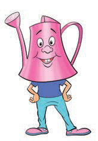

Mimi ni fyekeo, nitumie kukata nyasi ndefu.

Mimi ni brashi ngumu, ninasugua sakafu ili kuifanya iwe safi.

Mimi ni maji, nitumie kusafisha mazingira yako.

Mimi ni kitambaa, nitumie kuondoa vumbi.

Mimi ni keni, nitumie kumwagilia miti na maua.